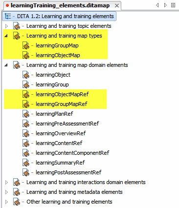

The DITA Learning and Training Specialization should support a standarized approach enabling the storage of learning objects and learning groups as separate files on a file system or repository. Currently, it only supports the storage of the components within a learning object (such as a learningOverview or learningContent) as separate files.
Mark Myers (champion contact) and Doug Burgess from SAP.
| Event | Date | Links |
|---|---|---|
| Stage 1 proposal accepted | October 25, 2011 |
https://www.oasis-open.org/apps/org/workgroup/dita/download.php/44183/minutes20111025.txt |
| Stage 2 proposal submitted | October 26th, 2012 | |
| Stage 2 proposal discussed | October 30th, 2012 |
https://www.oasis-open.org/apps/org/workgroup/dita/download.php/47353/minutes20121030.txt |
| Stage 2 proposal approved | November 6th, 2012 |
https://www.oasis-open.org/apps/org/workgroup/dita/download.php/47406/minutes20121106.txt |
| Stage 3 proposal submitted to reviewers | March 8th, 2013 | Dita Learning and Training Subcomitee |
| Stage 3 proposal (this document) submitted |
Implement two new elements, learningObjectMapRef and learningObjectMap. The learningObjectMapRef would be a topicref specialization that could be an optional child of a map such as a bookmap, learningMap, or learningGroup. learningObjectMapRef would allow a reference to one learningObjectMap which could be a map specialization that would function as a wrapper element around one and only one learningObject element. This would enable the learningObjectMap to be stored as a separate file and referenced by the learningObjectMapRef in one or more maps. learningObjectMap could also support a child topicmeta which implementors could use to capture various information about the learningObjectMap.
Implement two new elements, learningGroupMapRef and learningGroupMap. The learningGroupMapRef would be a topicref specialization that could be an optional child of a map such as a bookmap or learningMap. learningGroupMapRef would allow a reference to one learningGroupMap which could be a map specialization that would function as a wrapper element around one and only one learningGroup element. This would enable the learningGroupMap to be stored as a separate file and referenced by the learningGroupMapRef in one or more maps. learningGroupMap could also support a child topicmeta which implementors could use to capture various information about the learningGroupMap.
No interrelated proposals.
Two new elements added to % learningmap-d-topicref
<!ENTITY % learningmap-d-topicref
"learningObject |
learningGroup |
learningObjectMapRef |
learningGroupMapRef"
>
Two content entities declared for the new elements, containing %topicmeta;
<!ENTITY % learningGroupMapRef.content
"((%topicmeta;)?)">
<!ENTITY % learningObjectMapRef.content
"((%topicmeta;)?)">
Two new element entities declared:
<!ENTITY % learningObjectMapRef "learningObjectMapRef"> <!ENTITY % learningGroupMapRef "learningGroupMapRef">
Two new elements declared:
<!ELEMENT learningGroupMapRef %learningGroupMapRef.content;>
<!ELEMENT learningObjectMapRef %learningObjectMapRef.content;>
Two corresponding attribute entities declared, which reference the existing learningDomain mapref attribute entities:
<!ENTITY % learningGroupMapRef-attributes "%learningDomain-mapref-attributes;" > <!ENTITY % learningObjectMapRef-attributes "%learningDomain-mapref-attributes;" >
learningGroup.content entity modified to include the new element entities
<!ENTITY % learningGroup.content
"((%topicmeta;)?,
(%learningPlanRef;)?,
((%learningOverviewRef;) |
(%learningPreAssessmentRef;))*,
((%learningObject;) |
(%learningObjectMapRef;) |
(%learningGroup;) |
(%learningGroupMapRef;))*,
((%learningPostAssessmentRef;) |
(%learningSummaryRef;))* )"
>
Class attributes created for each new element:
<!ATTLIST learningObjectMapRef %global-atts;
class CDATA "+ map/topicref mapgroup-d/mapref learningmap-d/learningObjectMapRef ">
<!ATTLIST learningGroupMapRef %global-atts;
class CDATA "+ map/topicref mapgroup-d/mapref learningmap-d/learningGroupMapRef ">
PUBLIC "-//OASIS//DTD DITA 1.3 Learning Map//EN"
Public identifiers added for the modified learningMapDomain.ent and learningMapDomain.mod files:
<!ENTITY % learningmap-d-dec
PUBLIC "-//OASIS//ENTITIES DITA 1.3 Learning Map Domain//EN"
"learningMapdomain.ent">
%learningmap-d-dec;
<!ENTITY % learningmap-d-def PUBLIC "-//OASIS//ELEMENTS DITA 1.3 Learning Map Domain//EN" "learningMapdomain.mod" >%learningmap-d-def;
PUBLIC "-//OASIS//DTD DITA 1.3 Learning BookMap//EN"
Public identifiers added for the modified learningMapDomain.ent and learningMapDomain.mod files:
<!ENTITY % learningmap-d-dec
PUBLIC "-//OASIS//ENTITIES DITA 1.3 Learning Map Domain//EN"
"learningMapdomain.ent">
%learningmap-d-dec;
<!ENTITY % learningmap-d-def PUBLIC "-//OASIS//ELEMENTS DITA 1.3 Learning Map Domain//EN" "learningMapdomain.mod" >%learningmap-d-def;
New constraint module for the topicref parameter entity within the learningObjectMap DTD and the learningGroupMap DTDs. The content model was specified in the DITA Learning/Training Subcommmittee meeting, 2012-10-25.
This constraint module restricts %topicref; to non-navigational elements:
<!ENTITY % learningAggregationsTopicref-c-topicref "data | data-about | keydef | mapref | navref | topicgroup" >
| Existing 1.2 Documentation | New Proposed 1.3 Documentation |
|---|---|
| provides a map domain for structuring the specialized learning topics as reusable learning objects, and for managing the linking and relationships among them | provides a map domain for structuring and storing the specialized learning topics as reusable learning objects, and for managing the linking and relationships among them |
| Existing 1.2 Documentation | New Proposed 1.3 Documentation |
|---|---|
| No changes necessary. I think what we are proposing is more technical in nature that what is covered in this section. Gnerally, what we are doing just better enables the assumptions described here. |
| Existing 1.2 Documentation | New Proposed 1.3 Documentation |
|---|---|
| No changes necessary. I think what we are proposing simply better enables the existing use cases. |
| Existing 1.2 Documentation | New Proposed 1.3 Documentation |
|---|---|
| learningGroupMap: A map container to enable learningGroup elements to be stored as separate objects in a repository. | |
| learningObjectMap: A map container to enable learningObject elements to be stored as separate objects in a repository. |
Requires a new top-level topicref, entitled Learning and training map types. That topicref points to a new overview topic, lc_spec_maps.dita, with a shortdesc describing the map types. The top-level topicref contains topicrefs to learningGroupMap.dita and learningObjectMap.dita.
The existing topicref entitled Learning and training map domain elements requires additional topicrefs to the new topics learningObjectMapRef.dita and learningGroupMapRef.dita.
Proposed placement of topics is as follows:
Use the learning and training map types to aggregate learning content into individual learning objects, groups of learning objects, or higher-level aggregations of learning groups and objects, according to the needs identified by the learning goals and objectives.
Use a learningGroupMap to create standalone aggregations of learningObjects and learningGroups, as well as overviews, summaries, and assessments, according to the needs identified by the learning goals and objectives.
The learningGroupMap is a map specialization which supports the DITA Learning and Training Map domain. It is used to aggregate learningObjects and learningGroups, together with their supporting files and assessments, into a single standalone map type. Recursion is provided to support complex aggregations of learning content and can be used as necessary to support the creation of complex learning structures, such as learning units, sections, and courses.
- map/map learningGroupMap/learningGroupMap
Use a learningObjectMap to create standalone aggregations of learningContent together with its supporting plan, overview, summary, and assessments, according to the needs identified by the learning goals and objectives.
The learningObjectMap is a map specialization which supports the DITA Learning and Training Map domain. It is used to aggregate learningContent, together with its supporting files and assessments, into a single standalone map type.
- map/map learningObjectMap/learningObjectMap
Use a learningGroupMapRef element to include a map reference to a learning group map as part of a DITA learningMap, learningBookMap, learningGroupMap, or learningGroup.
The learningGroupMapRef is a mapref specialization included in the DITA Learning and Training Map domain. It is used to reference a single learningGroupMap, either from a learningMap, learningBookMap, learningGroupMap or learningGroup.
The hierarchy of the referenced learningGroupMap is merged into the container map or learningGroup at the position of the reference, and the relationship tables of the child map are added to the parent map.
+ map/topicref mapgroup-d/mapref learningmap-d/learningGroupMapRef
Use a learningObjectMapRef element to include a map reference to a learning object map as part of a DITA learningMap, learningBookMap, or learningGroupMap.
The learningObjectMapRef is a mapref specialization included in the DITA Learning and Training Map domain. It is used to reference a single learningObjectMap, either from a learningMap, learningBookMap, learningGroupMap or learningGroup.The hierarchy of the referenced learningObjectMap is merged into the container map or learningGroup at the position of the reference, and the relationship tables of the child map are added to the parent map.
+ map/topicref mapgroup-d/mapref learningmap-d/learningObjectMapRef